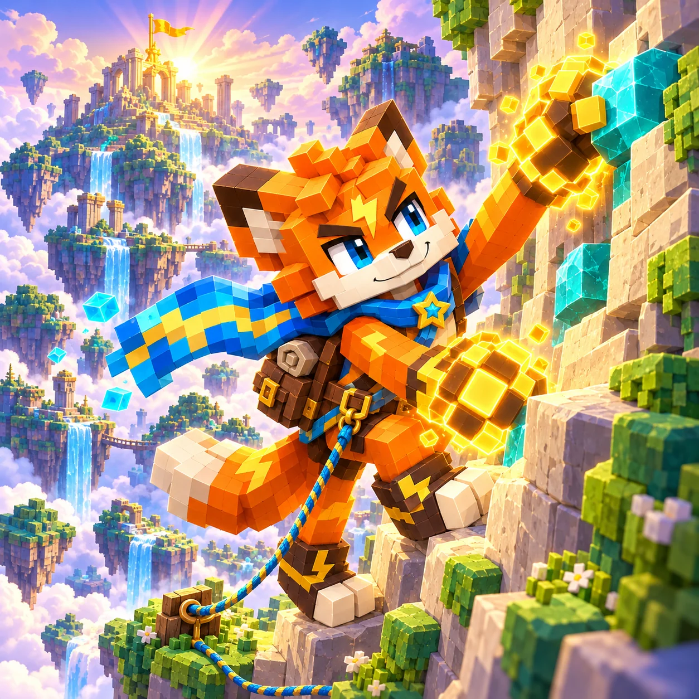

Fia’s Hightrail
Choose your next handhold, rest on safe ledges and guide Fia through 30 mountain rescue routes.
Goal
Guide Fia to each summit and complete the marked deliveries and anchors.
How to play
Tap a connected handhold. Hold to preview the cost; slide away to cancel. Use arrow keys to select and Enter to climb.
On the first route, the left branch has four moves costing 16 each. The right branch has three moves costing 25 each. The shorter path uses more stamina; a stamp adds a deliberate detour.
Controls and rules
Safe ledges restore stamina. Wet moves and cargo cost more. Wait for calm wind and leave crumbling grips quickly. A piton makes a marked grip safe.
- Sunlit Meadows: Choose a route; rest to recover stamina.
- Rainwall: Wet moves cost 7 extra. Crumbling grips last 4 seconds.
- Wind Ridge: Wind blocks marked moves for part of a 6-second cycle.
- Frost Steps: Cold ledges restore only 70 stamina; warm ledges restore 100.
- Anchor Pass: Fix the marked anchors. Connected ropes show opened shortcuts.
- Cloud Summit: Combine weather, warmth, cargo and anchors.
- One safety clip. All routes can be completed with this kit.
- One extra safety clip per attempt. Unlock after route 5.
- Remove the wet surcharge on the first two wet moves. Unlock after route 10.
- Calm wind lasts 4.4 seconds per cycle. Unlock after route 15.
Finishing and feedback
Reach the exit after all tasks to clear the route. Collect stamps and avoid falls for extra seals. Gear unlocks for free; diamond outfits are permanent cosmetics.
A scarf weave, rope pattern, backpack ornament and camp tent. Preview before buying; owned forever for 12 diamonds.
Why the trail has ledges
The route is built around choosing your next resting place. Visible handholds and costs let you plan before committing; the automatic camera keeps one-finger climbing practical. Detours offer stamps, while cargo and anchors give you reasons to return along a path. The base kit can finish every route.
Player and save information
No sign-in is needed. Routes, seals, free gear and cosmetics are saved in this browser. Clearing site data removes them. Leaving a climb saves the latest safe ledge, not a mid-air move. Chapter reset keeps permanent equipment, appearances and lifetime rewards.
Questions about the trail
- Does equipment cost diamonds?
- The three functional kits unlock by clearing routes. Only the optional cosmetic set costs diamonds.
- Can I play with one finger?
- Yes. Tap a connected hold; the camera follows Fia automatically.
- Why did a handhold disappear?
- Wet moves cost 7 extra. Crumbling grips last 4 seconds.
- When can I cross a wind gap?
- Wind blocks marked moves for part of a 6-second cycle. Calm wind lasts 4.4 seconds per cycle. Unlock after route 15.
- What happens if I leave or reset?
- No sign-in is needed. Routes, seals, free gear and cosmetics are saved in this browser. Clearing site data removes them. Leaving a climb saves the latest safe ledge, not a mid-air move. Chapter reset keeps permanent equipment, appearances and lifetime rewards.